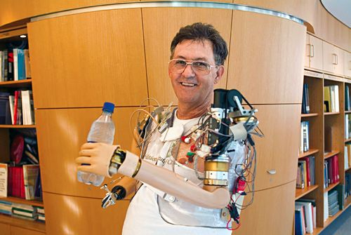
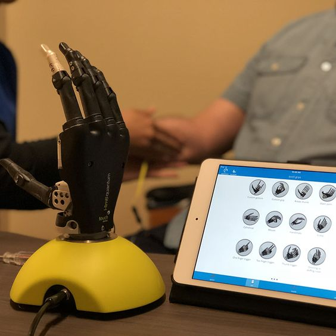
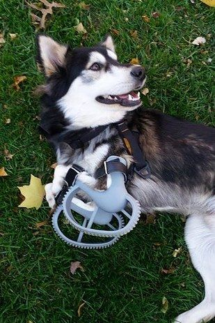

F-Arm Corporation was Founded in 2037 in Indonesia with The Motto of "Empathy in Motion, Crafting Prosthetic Solutions", we always choose the Best Technologies. At Arm Prosthetic Corp, we are dedicated to transforming the lives of individuals with limb loss or limb difference. Our company is at the forefront of developing cutting-edge arm prosthetics that redefine mobility, independence, and quality of life.
. . .

we choose employees who are competent in their fields, we train engineers before working in our company.

we choose the tech part that configure the beautiful art, We offer a range of customizable prosthetic options to cater to diverse preferences and requirements.

we chose a strategic place. The design of the place is adjusted so that visitors feel at home entering our shop, chatting with friends, friends and family is very comfortable here.


I recently had the opportunity to try out the F-Arm corp's arm prosthetic, and I must say, it's a remarkable piece of technology. This cutting-edge prosthetic offers a host of features that enhance functionality, comfort, and overall quality of life for individuals with upper limb loss. First and foremost, the design and craftsmanship of the F-Arm corp's prosthetic are exceptional. The lightweight and durable materials used, such as carbon fiber, provide a perfect balance between strength and comfort.
. . .

First and foremost, the F-Arm corp's heart prosthetic is a marvel of engineering. Its design and construction reflect meticulous attention to detail, with biocompatible materials that ensure compatibility and durability within the human body. The advanced technologies integrated into this prosthetic make it a true game-changer in the realm of cardiac support. One of the most remarkable aspects of the F-Arm corp's heart prosthetic is its ability to seamlessly mimic the pumping action and function of a natural heart. The mechanical system emulates the rhythm and flow of blood, effectively providing the essential circulation required for optimal health.
. . .

The F-Arm corp's eye prosthetic is a true testament to precision and artistry. Its design flawlessly captures the natural appearance of an eye, creating a seamless blend with the surrounding tissues. The attention to detail, including the intricately painted iris, pupil, and blood vessels, is truly remarkable. The result is a prosthetic eye that looks incredibly realistic, restoring symmetry and enhancing facial aesthetics.
. . .


We Help You To Have Comfortable Living
by Cutting-Edge Prosthetic Innovation